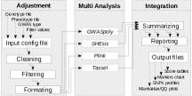

One way to validate GWAS results from a study is to replicate the analysis using a different tool, but using different GWAS software in plants to perform GWAS analyzes to the same genomic data often produce different results. Although the underlying model implemented in this kind of software could be different, each software has its own assumptions which could have a strong influence on the results which produces different associations and confuses the researchers from the true associations. Furthermore, many important crops are polyploids and new genomic data of polyploid plants are available much more frequently, but most of the GWAS software to analyze them have been developed for diploid organisms. Currently, two software tailored for polyploid organisms are the R package GWASpoly Rosyara et al. [2016] and the SHEsis tool Shen et al. [2016], and widely used diploid GWAS software, as Plink Purcell et al. [2007] and Tassel Bradbury et al. [2007], have been also used to analyze polyploids organisms by «diploidizing» the marker data Lindqvist-Kreuze et al. [2014], Schulz et al. [2016].
However, each tool has its own way of doing things: different user interfaces (GUI or command line based), different input formats (phenotype and genotype formats), different models and algorithm assumptions, and different outputs. Consequently, in light of all these considerations, researchers must spend great effort when they try to replicate GWAS results by using different tools. With this in mind, we developed the MultiGWAS tool that with a single input it performs GWAS analyses by using four different GWAS software in such a way to help researchers in the selection of true associations across GWAS. The tool scans the different results files, calculates new scores and thresholds from resulting markers, select best ranked and significative makers, and create summary tables and plots that show in an intuitive manner the common and different markers found by the four tools.
MultiGWAS was implemented in R. Genomic data files and parameters are specified in a configuration file (seesection 2.1) which is passed as unique argument to MultiGWAS through the command-line interface using a terminal in Linux or Mac systems.
A flowchart of the main central steps involved in the three phases of the MultiGWAS tool is outlined in figure 1. The first phase preprocesses the inputs; the second phase performs GWAS on each tool; and the third phase postprocesses the outputs to summarize the results. These phases are detailed below.
MultiGWAS takes as input a configuration file where the user specify the genomic data for the GWAS analysis (genotype and phenotype files), along with the arguments used by the four tools to perform GWAS quality control (QC) on this data (see below). It starts with a cleaning and filtering steps performed on the genomic data. The first to get the common individuals to work with, and the second, to exclude from the analysis individuals and SNPs that are likely to be of poor-quality. Then, the filtered genotype and phenotype are transformed to the specific formats required for each tool.
The used format of the phenotype and genotype are the same as the the GWASpoly software Rosyara et al. [2016], except that the phenotype file must include only one trait without covariates. For the genotype file, the first three column correspond to the marker name, chromosome number, and position in the chromosome; while the next columns contain the marker data for each individual in the population codified in the ”ACGT” format (e.g. AATT, CCGG, AAAT, GGCG). For the phenotype file, the first column contains the individual name, and the second contains the trait value.
The current arguments included in the configuration file are: (1) The genotype/phenotype filenames, (2) The genome-wide significance threshold a (commonly 0.01 or 0.05), (3) The method for multiple testing correction (”Bonferroni” or ”FDR”), (4) The type of GWAS (”NaiveGWAS” or ”FullGWAS”), (6) The maximum number of best ranked association to be reported, and (6) TRUE or FALSE whether to use quality control (QC) filters or not. The QC filters used by MultiGWAS are: (a) MAF (minor allele frequency), (b) MIND (individual missing rate), (c) GENO (SNP missing rate), and (d) HWE (Hardy-Weinberg threshold).
Two types of GWAS analyses can be conducted by MultiGWAS: Full and Naive. The first with control for population structure and individual relatedness; and the second without any of these controls. Controlling of population structure is based on the principal components (PCs). Each software calculates the PCs and uses the top ten as covariates in the association analysis, while controlling of individual relatedness is based on kinship matrices calculated by each software, in the case of Tassel and GWASpoly, and calculated externally by the king software Manichaikul et al. [2010], in the case of Plink and SHEsis.
The allowed format for the marker data is the ”ACGT” configuration which is suitable for the polyploid tools GWASpoly and SHEsis, but not for the diploid tools Plink and Tassel. So, our MultiGWAS tool ”diploidizes” the tetraploid marker data for these two tools by coding each marker in two ways: all possible homozygous genotypes (AAAA, CCCC, GGGG, TTTT), are coded with two nucleotides (AA, CC, GG, and TT); and all possible heterozygous genotypes (e.g. AAAT, ... ,CCCG) are coded with the combination of their reference and alternate alleles calculated from the tetraploid marker (e.g. AT, ... ,CG).
When the filtered genotype and phenotype are ready for the four tools, each tool is executed in parallel by MultiGWAS using a parameterized script for each tool. Each script is called using as arguments the filtered genotype and phenotype along with the set of specified values for the arguments described in section 2.1. If the user has had experience with one of the four GWAS tools, these scripts can be modified to improve the analysis according to the specific tool syntax and arguments.
After the execution of the four tools by MultiGWAS, their outputs are processed to create tables, marker plots, and Manhattan/QQ plots that summarizes their resulting associations. Scores and thresholds for the markers are calculated taking into account: the p-value of each marker, the user specified correction method and significance level a. These values are calculated taking into account only the number of valid genotype calls (nonmissing genotype, phenotype, and covariates).
Two tables and marker plots are created: one for the significative associations which score is greater than the threshold, and other for the best N ranked associations, with N defined by the user in the configuration file. The Manhattan and QQ plots correspond to the associations found by the GWASpoly tool.
Figure 2 presents two marker plots generated by MultiGWAS in the analysis of the genomic data for the Solanaceae Coordinated Agricultural Project (SolCAP) potato diversity panel, used to test the GWASpoly software Rosyara et al. [2016]. In the first case (upper plot on the figure 2), it shows that the four tools found a large set of common markers as the GWAS type used was Naive, without any controls for population structure or individual relatedness. However, two markers: the c1_8019 and the c2_25471 are reported by Rosayra et al., the first as the most significative association, and second as the second best ranked association.
In the second case (lower plot on the figure 2), it shows that the set of common markers is reduced, as the GWAS type used was Full GWAS with controls for population structure (10 PCs) and individual relatedness (kinship matrix). Now, the two polyploid tools GWASpoly and SHEsis found the common marker c1_8019, as in the Naive GWAS. But, the two diploid tools found a different common marker, the c1_16001.
The MultiGWAS tool allows users to perform a GWAS analysis for tetraploid organism using four GWAS software at the same time: GWASpoly, SHEsis, Plink and Tassel. The tool deals with all the matters of the GWAS process in the four software, and only needs as input a simple configuration file with genomic filenames, values for different quality control filters, and the type of analysis to be performed. Analysis include both Full GWAS with control for population structure and individual relatedness, and Naive GWAS without any control.
The summary reports generated by the MultiGWAS tool provide the user with tables and plots that show the significative and best ranked markers found by each tool. And, the marker plots is a powerful visualization that describes graphically the markers found by each tool and the common marker found by more than one tool, which help users to decide in a more intuitively way the possible true or false associations.
P. J. Bradbury, Z. Zhang, D. E. Kroon, T. M. Casstevens, Y. Ramdoss, and E. S. Buckler. TASSEL: software for association mapping of complex traits in diverse samples. Bioinformatics, 23(19):2633—2635, 2007. ISSN 1367-4803. doi: 10.1093/bioinformatics/btm308. URL https://doi.org/10.1093/bioinformatics/btm308.
H. Lindqvist-Kreuze, M. Gastelo, W. Perez, G. A. Forbes, D. De Koeyer, and M. Bonierbale. Phenotypic stability and genome-wide association study of late blight resistance in potato genotypes adapted to the tropical highlands. Phytopathology, 104(6):624—633, 2014. ISSN 0031949X. doi: 10.1094/PHYTO-10-13-0270-R.
A. Manichaikul, J. C. Mychaleckyj, S. S. Rich, K. Daly, M. Sale, and W. M. Chen. Robust relationship inference in genome-wide association studies. Bioinformatics, 26(22):2867—2873, 2010. ISSN 13674803. doi: 10.1093/bioinformatics/ btq559.
S. Purcell, B. Neale, K. Todd-Brown, L. Thomas, M. A. Ferreira, D. Bender, J. Maller, P. Sklar, P. I. De Bakker, M. J. Daly, and P. C. Sham. PLINK: A tool set for whole-genome association and population-based linkage analyses. American Journal of Human Genetics, 81(3):559—575, 2007. ISSN 00029297. doi: 10.1086/519795.
U. R. Rosyara, W. S. De Jong, D. S. Douches, and J. B. Endelman. Software for Genome-Wide Association Studies in Autopolyploids and Its Application to Potato. The Plant Genome, 9(2):0, 2016. ISSN 1940-3372. doi: 10.3835/plantgenome2015.08.0073. URL https://dl.sciencesocieties.org/publications/tpg/abstracts/9/2/plantgenome2015.08.0073.
D. F. Schulz, R. T. Schott, R. E. Voorrips, M. J. Smulders, M. Linde, and T. Debener. Genome-wide association analysis of the anthocyanin and carotenoid contents of rose petals. Frontiers in Plant Science, 7 (DECEMBER2016):1—15, 2016. ISSN 1664462X. doi: 10.3389/fpls.2016.01798.
J. Shen, Z. Li, J. Chen, Z. Song, Z. Zhou, and Y. Shi. SHEsisPlus, a toolset for genetic studies on polyploid species. Scientific Reports, 6:1—10, 2016. ISSN 20452322. doi: 10.1038/srep24095. URL http://dx.doi.org/10.1038/srep24095.